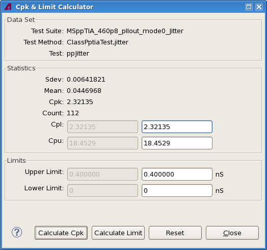

Calculating Cpk values and required limits
The Cpk & Limit Calculator dialog lets you determine the limits required to achieve a particular Cpk value or the Cpk value which a particular set of limits would have produced.
About this task
Perform these calculations to determine limit settings that are optimized for a desired yield.
Before you begin
Load the data log of the test for which you want to perform the calculation and open it.
Procedures
Calculating limits
To calculate the limits that would have been required in the selected test to achieve desired Cpk values:
- In the Test summary tab of the data navigation view of the test, right-click the row
that you want to analyze and choose Cpk Limit Calculator from the
shortcut menu.
The Cpk & Limit Calculator dialog opens.

- Enter the Cpl and Cpu values for the desired Cpk level in the Cpl and Cpu fields in the Statistics section.
- Click Calculate Limit.
The required limits are shown in the Upper Limit and Lower Limit fields.
Calculating Cpk values
To calculate what the Cpk values of the selected test would have been if the limits had been set differently for its execution:
- Open the Cpk & Limit Calculator dialog as described in step 1 of Calculating limits, above.
- Enter the limits you want to analyze in the Upper Limit and Lower Limit fields.
- Click Calculate Cpk.
The Cpk values that would have been achieved with these limits in the test are displayed in the Statistics section.
Results
If you have calculated the limits, you can now see in the dialog which limits you would have need to set in the test to achieve the specified Cpk values.
If you have calculated the Cpk values, the dialog now shows you which Cpk values the test would have had with the specified limits.
What to do next
When you have found the limits that work best for your situation, you can modify the test setup to use those limits.
Functional changes
- Introduced in SmarTest 7.2.0
- SmarTest 7.2.1: Renamed Cph to Cpu.